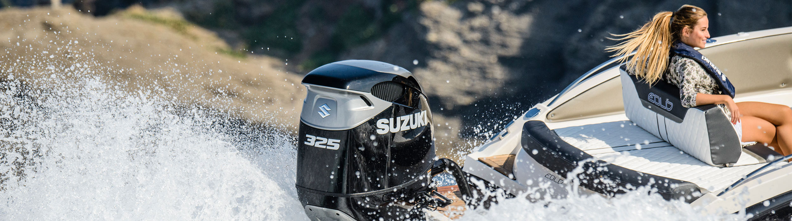

- 
船外机事业
OUTBOARDS
-
4冲程船外机
-
2冲程船外机
摩托车事业
MOTORCYCLE
-
V-STROM 650XT ABS
新闻&赛事
NEWS & RALLYING
新闻活动
赛事活动
-
2020.7.21
新闻活动
首届“铃木骑行家”风暴训练营开营 7月18日，首届“铃木骑行家”SUZUKI FAMILY风暴训练营于上海铃木直营店正式开营。当天上午，铃木（中国）投资有限公司总经理石谷先生首先致开营词。他对首届风暴训练营寄予… -
2020.7.15
新闻活动
探秘骑行魅力 纵享驰·骋人生 骑行不仅是一种生活乐趣，更是一种挑战自我的生活方式和对梦想境界的极致追求。以资深经验和专业技术为背书，铃木中国为“SUZUKI FAMILY”、“骑行爱好者”们打造了一个专业风… -
2020.6.5
新闻活动
守护洁净海洋 尽享驰骋快感-铃木(中国)千岛湖试驾会圆满举行 2020年5月19日-5月21日，铃木中国千岛湖试驾会在风景秀丽的千岛湖开元度假酒店举行。铃木（中国）投资有限公司上海分公司领导、铃木船外机一、二级经销商及VIP客户共30余… -
2018.9.18
新闻活动
铃木2018阿拉善英雄会集结令 探索和冒险，所有梦想将从这里开始；激情和狂野，这里是属于我们的盛会；放纵和野性，将在这里被全面点燃！历经12载，一朝英雄梦，2018第十三届阿拉善英雄会将于10月2日正… -
2018.6.20
新闻活动
铃木赞助2018上海•日本电影周，共同促进中日文化交流 6月17日，2018上海•日本电影周拉开帷幕。本次电影周恰逢中日和平友好条约缔结40周年纪念，更加具有特别纪念的意义。今年放映的电影，向中国观众传递出日本的社会现象，人… -
2017.7.17
新闻活动
守护洁净海洋 尽享驰骋快感-铃木(中国)千岛湖试驾会圆满举行 2020年5月19日-5月21日，铃木中国千岛湖试驾会在风景秀丽的千岛湖开元度假酒店举行。铃木（中国）投资有限公司上海分公司领导、铃木船外机一、二级经销商及VIP客户共30余…
-
2018.5.22
赛事活动
不忘初心 越野前行 铃木超级维特拉出征2018环塔拉力赛 2018年6月2日，国内外众多越野爱好者翘首以盼的长距离越野拉力赛-中国环塔（国际）拉力赛将在新疆乌鲁木齐拉开帷幕。这是一场勇者的聚会，更是一场豪情的激荡。2010~2017… -
2017.7.6
赛事活动
八年环塔路越野真性情 铃木超级维特拉出征2017环塔拉力赛 2017年6月10日，作为国内最大的汽车、摩托车、卡车同场竞技的越野赛事，同时也是全亚洲参赛人数最多、参赛车辆最多、赛道距离最长的长距离越野拉力赛-中国环塔（国际）拉… -
2017.2.18
赛事活动
2017CRC首站落幕 铃木速翼特再现拉力情 2017年中国汽车拉力锦标赛（ＣＲＣ）首站于2月18日在黑龙江鸡西兴凯湖圆满落幕，铃木永驰拉力车队继续驾驶速翼特赛车参赛，历经两天冰雪鏖战，最终收获了N2组第二名，并获… -
2017.1.16
赛事活动
CRC2016赛季落幕铃木速翼特再度迎来“大满贯” 2016年中国汽车拉力锦标赛（ＣＲＣ）收官站-长春农安站于2017年1月16日圆满落幕，铃木永驰拉力车队驾驶速翼特赛车历经鏖战，再度捧回N2组桂冠,也实现了年度N2组的“大满贯”！ -
2016.12.18
赛事活动
2016CRC山西站落幕铃木速翼特完美夺冠 经历2天激烈的冰雪砂石之战，2016年中国汽车拉力锦标赛（ＣＲＣ）第三站—山西大寨站于12月18日圆满落幕，铃木永驰拉力车队驾驶速翼特赛车继续领跑N2组，蝉联本赛季第三个N… -
2016.6.15
赛事活动
2016CRC河南登封站落幕铃木速翼特首站告捷 2016年中国汽车拉力锦标赛（ＣＲＣ）首站—河南登封站于６月12日圆满落幕，铃木永驰拉力车队延续2015赛季阵容，继续驾驶速翼特赛车参赛。历经三天鏖战，最终收获了N2…
查看更多
精彩视频
VIDEO